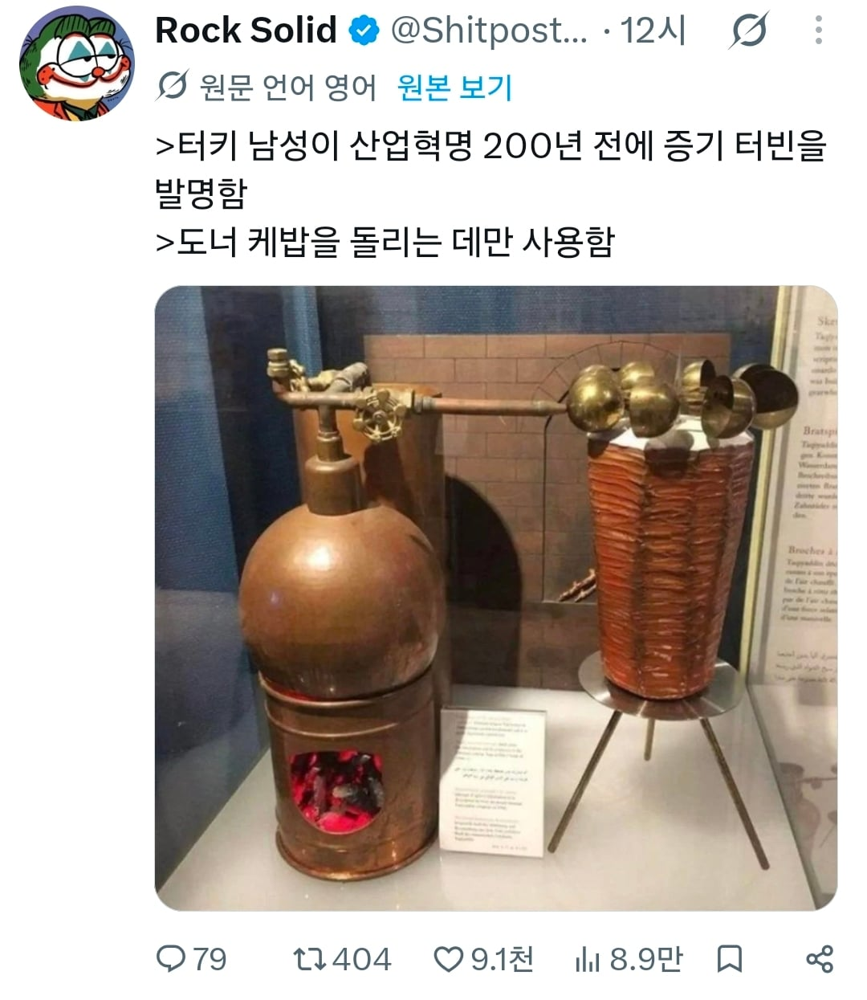

산업혁명 200년 전에 나온 증기기관.jpg
댓글
??? : 그래서 케밥 돌릴수있냐를루
증기로 고기 꼬치를 돌리는 장치를 기록했다 → 사실. 오스만 제국의 학자 **타키 앗딘(Taqi al-Din)**은 1551년 저서에서 물을 끓여 나온 증기를 날개 달린 바퀴에 쏘아, 고기 굽는 꼬치를 자동으로 회전시키는 장치를 설명했습니다. 산업혁명보다 약 200년 앞선다는 시기 설명은 대체로 맞습니다. �
Muslim HeritageMuslim Heritage
그보다 앞서 고대 알렉산드리아의 헤론에게도 증기로 회전하는 장치가 있었습니다. 타키 앗딘의 장치는 증기 회전을 조리에 응용한 초기 사례로 이해하는 것이 정확합니다. 현대 산업용 증기 터빈을 완성했다는 뜻은 아닙니다. �
museum.kaust.edu.sa
도네르 케밥을 돌리는 데만 사용했다 → 입증되지 않은 단정. 문헌에서 확인되는 것은 ‘고기 굽는 꼬치를 회전시키는 방법’입니다. 이것만으로 실제 보급 여부나 다른 용도가 전혀 없었다는 것까지 확인할 수는 없습니다. 특히 오늘날 익숙한 수직 도네르 꼬치는 19세기에 등장한 형태이므로, 이를 16세기 도네르 기계라고 부르면 시대가 섞입니다. �
Muslim HeritageMuslim Heritage +1
사진 같은 박물관 전시 장치도 당시 물건이 그대로 남은 유물이라기보다 문헌을 바탕으로 만든 재현 모형으로 봐야 합니다. 이스탄불 해당 박물관의 전시 안내 역시 증기 꼬치 회전 장치를 16세기 학자의 기록에 따라 제작했다고 설명합니다. �
istanbul-tourist-information.com
즉, “산업혁명 약 200년 전에 증기로 고기 꼬치를 자동 회전시키는 방법이 기록돼 있었다”까지는 맞습니다.
그니까 그 기술을 밥먹는곳만썼어?
아이구
다른데에 쓰기엔
인력은 저렴한데 석탄이 비싸고
그렇게 대량생산해도 수요가 못따라옴
이제 케밥이 돌 차례다
케밥 터닝튼
다른 거였으면 획기적인 발명으로 발전할 수 있었을 텐데
하필 고기에다가 해가지고 증기로 물이 줄줄 흘러서 망했을듯
바베큐그릴 구울때 물 뿌려서 수분감 유지해서 저것도 ㄱㅊ을듯
과거에는 미개하게 물을 끓여 터빈을 돌렀군요 요즘은 어떻습니까?
원자력을 사용하여 물을 끓인 후 터빈을 돌립니다….가스를 압축해 터빈을 돌리기도하지요
남은 열은 회수하여 물을 끓여 스팀터빈을 또 돌려요 CCPP…
그 터빈을 돌려 전기를 생산해서 모터를 돌립니다.
뷁대표 께서 케밥 발명한거 아니였음??
케밥은 중대사항이지 ㅇㅇ
물을 끓인다 케밥을 돌린다
아니 고기 익히는거랑 돌리는거 따로 불을 떼?ㅋㅋㅋㅋㅋ
새로운 고효율 에너지원이 생긴다 -> 물을 끓인다
사실 증기터빈 기술은 고대 그리스때도 고안된거임 진짜 제대로된 산업혁명은 아주 효율적인 기계역학,금속공학이 적용된 고효율 터빈+저렴한 석탄+빵빵한 수요처 이 세가지가 있어야 가능함
산업혁명=대량생산인데, 대량생산을 위한 폭넓은 수요층(요즘으로치면 중산층), 저렴한 노동력, 저렴한 원료수급 등이 동반됐어야했음 산업혁명 200년 전 터키(오스만)이면 그런건 택도 없었을듯
다들 증기기관이라고 하니 동일한 개념인줄 알고 뭉뜽그려서 생각하는데
산업혁명시기의 기계식 증기기관과 저런 원시적인 증기기관은 궤가 다름
애초부터 저런 원시적인 증기기관은 기원년전부터 존재해왔고, 심지어 조선에서도 존재했었음
저런 원시적인 증기기관을 복동식 구조와 회전운동의 도입으로 복합적으로 만들어낸 기계식 증기기관이랑 비교하기에는 넌센스임
애초에 원시적인 증기기관은 저런식으로 소규모나 제한적인 특정한 상황에서밖에 못쓰였고, 산업혁명의 기계식 증기기관은 그러한 제한없이 대규모, 환경적인 요인없이 에너지로 전환이 가능했음
고대 로마도, 고대 중국도, 심지어 한반도의 조선조차도 저런 원시적인 개념의 증기기관은 존재했음
놉 이것도 전혀 다른 개념의 물건인데 국뽕으로 인해 왜곡된 케이스임
구텐베르크 활자는 단순한 금속활자가 아니라 인쇄기임
금속활자는 그냥 금속틀로 만든 활자판일뿐이고
구텐베르크를 높이치는 이유가 단순 금속으로 만든 활자판을 넘어 인류 최초의 인쇄기라서 그럼
최초로 금속활자판을 만든건 놀라운일이지만... 최초의 인쇄기랑 비교하기엔 어불성설이지
애초에 구텐베르크로 인쇄술이란 개념이 등장하면서 정보혁명이 터진 이상 인류사적 영향력에서 한국의 금속활자는 있어도 그만 없어도 그만이지만 구텐베르크는 없어서는 안될정도로 인류 발전사에 절대적인 영향력을 지닌 물건임
누구나 쉽게 책을 생산해내고 대량으로 찍어내서 유통할수 있게 된거니까
구텐베르크 금속활자가 그냥 개씹쩌는 발명품이니까 열등감에 찌들어있던 좆밥 시절의 한국에서 자존감 딸치려고 국뽕 금속활자가 더 오래됐다도르라는 식으로 비벼본거임
금속활자가 더 오래됐으니 구텐베르크보다 더 개쩌는거다~ 우리가 몇백년 더 앞서서 만들었으니 우월하다라는 식으로 자존감딸딸이 국뽕사업이었음
구텐베르크의 의의는 인류 최초의 인쇄기이자 인쇄술인건데 금속활자도르로 국뽕질한거ㅋㅋㅋ
그냥 다른 물건임